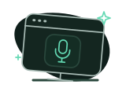
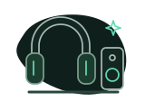

Sound clearer to them.
Reduce the background noise around your microphone, so the people on your call can focus on your voice.
Your microphone, cleaned upReduce background noise on both sides of the call.
Your audio is processed right on your device.
Reduce background noise around you.

OpenKrisp microphoneFor your call appIn your call app, choose this microphone:
OpenKrisp MicrophoneOpen your call app’s audio settings and select OpenKrisp Microphone as the microphone. Keep OpenKrisp running during the call.
Reduce background noise from other people in your call.

You hearHeadphones or speakersIn your call app, choose this speaker:
OpenKrisp SpeakerOpen your call app’s audio settings and select OpenKrisp Speaker as the speaker. Choose your headphones in OpenKrisp.
Try the controls. This is an interactive preview; it doesn’t access or process your audio.
OpenKrisp processes your microphone and incoming call audio locally. Your audio isn’t uploaded to a cloud service for noise reduction.
Your call app still connects and carries the conversation.
Both sides of the call.
Noise reduction on your device.
Inspect the code, modify it, and share your improvements.
A busy room shouldn’t get in the way of a good conversation. Clean up what you send and what you hear, independently.
Reduce the background noise around your microphone, so the people on your call can focus on your voice.
Your microphone, cleaned upNoisy room on the other end? Reduce background noise in incoming call audio before it reaches your headphones.
Their audio, cleaned upClean up your microphone, incoming audio, or both. Turn either side on or off without changing the other.
Two independent audio controlsOpenKrisp sits between your audio devices and your call app. Set it up once, then keep it running while you talk.
Start with headphones for the beta.
Open OpenKrisp and select your microphone and the headphones you want to listen through.
Turn on your microphone, your speakers, or both. Each side has its own control.
In its audio settings, choose OpenKrisp Microphone as the microphone and OpenKrisp Speaker as the speaker.
Quieter calls, with noise reduction that stays on your device.
The current source uses GPLv3. These earlier beta installers retain their original bundled license terms. About the license transition
Device compatibility and real-call quality are still being tested. Downloads require repository access while the beta is private. See release notes and validation details.
Need a hand getting connected?
Get help on GitHub
OpenKrisp processes your audio locally on your device. It doesn’t upload audio to a cloud service for noise reduction. Your call app still handles the call itself.
Yes. Your microphone and incoming call audio have independent controls. Use either one on its own, or turn on both.
Use a call app that lets you select its microphone and speaker devices. Choose OpenKrisp Microphone and OpenKrisp Speaker in its audio settings. Compatibility is still being tested during the beta.
The current beta targets Apple Silicon Macs and x86-64 Linux. Windows and Intel Mac installers aren’t provided.
Noise reduction is designed for speech. Use your usual audio output for music. Start with headphones for calls; speakerphone use hasn’t been validated yet.
Yes. The current OpenKrisp source is licensed under GNU GPLv3 (GPL-3.0-only). You can use, inspect, modify, and redistribute it, including commercially, under the license’s terms. Distributed covered modifications must preserve GPLv3 licensing and corresponding source access for recipients. Source access requires repository access while the beta is private. Earlier beta installers retain their original bundled terms. Read the license and contribution guide.